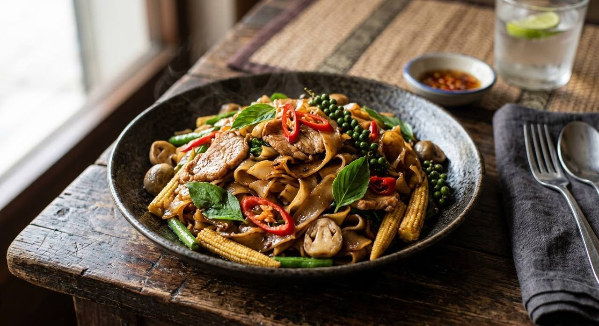

ผัด means stir-fried, ขี้เมา means drunkard. No alcohol goes in the wok — the name means the dish built to rescue you the morning after, or to eat at 2am before bed. Either way, the heat has to hit.

Nobody has a clean origin story for ผัดขี้เมา — "drunken stir-fry" — and Thai sources are honest about that. The two working theories: it's the food you cook for someone nursing a hangover (chilli, basil and garlic as medicine), or it's what you eat at two in the morning on the way home. Either way, it is a dish about heat: wok heat and chilli heat, not alcohol. There is no beer in the wok. Ever.
The engine is a small pounded relish — chillies, garlic, shrimp paste, salt — fried in oil before anything else goes in. From there the dish splits into the three styles Thai cooks argue about: the classic with fresh wide rice noodles, the herb-heavy no-noodle stir-fry eaten over rice, and the instant-noodle street version every Thai student has made at midnight.
The one ingredient nobody compromises on is the basil — and the classic version uses holy basil (กะเพรา), the peppery one, not the sweet basil of Italian cooking. Fresh green peppercorn sprigs and the whole stems are normal. It is a rough, honest, fast dish.
| Thai | English | Amount |
|---|---|---|
| The relish (น้ำพริกผัดขี้เมา) | ||
| พริกขี้หนูสวน | Bird's eye chillies | 4 |
| พริกชี้ฟ้าเหลือง | Yellow spur chillies | 2 |
| พริกชี้ฟ้าแดง | Red spur chilli | 1 |
| กระเทียมไทย | Thai garlic | 30 g |
| กะปิ | Shrimp paste | 1 tsp |
| เกลือ | Salt | 1 pinch |
| The stir-fry | ||
| น้ำมันรำข้าว | Rice bran oil | 2 tbsp |
| เนื้อหมูสะโพก | Pork, sliced | 180 g |
| เห็ดฟาง | Straw mushrooms | 65 g |
| ข้าวโพดอ่อน | Baby corn | 65 g |
| แครอท | Carrot, sliced | 30 g |
| ถั่วแขก | Green beans | 40 g |
| พริกไทยอ่อน | Fresh green peppercorn sprigs | 3 |
| น้ำสต๊อกไก่ | Chicken stock | ¼ cup |
| ก๋วยเตี๋ยวเส้นใหญ่ | Fresh wide rice noodles | 320 g |
| ซอสหอยนางรม | Oyster sauce | 2½ tbsp |
| ซีอิ๊วขาว | Light soy sauce | 2 tsp |
| น้ำตาลทราย | Sugar | 1½ tsp |
| ใบกะเพรา | Holy basil | 20 g |
The herb stir-fry (ผัดขี้เมาหมู). The same dish with the noodles left out — instead the herb load doubles: pounded chilli and garlic, 50 g fingerroot (กระชาย), fresh peppercorns, and a big bunch of Thai basil (โหระพา), over 450 g of pork. Eaten with rice. In the noodle-less form the herbs are the dish, which is why sources reach for the softer Thai basil instead of holy basil.
The instant-noodle version (มาม่าผัดขี้เมา). Boil instant noodles until just pliable, drain, and fry exactly like the recipe above. This is the dorm-room classic, and Thai food writers treat it with genuine affection rather than apology. It is also the version most likely to have an egg cracked into it.
All three share the same engine: the pounded relish hitting hot oil first.
Noodles or not. The classic carries fresh wide rice noodles; the herb version carries none; the street version carries instant noodles. Thai sources publish all three as ผัดขี้เมา without blinking.
The basil. Holy basil (กะเพรา) for the noodle classic — peppery, slightly clove-like; Thai basil (โหระพา) for the herb-heavy no-noodle version. Swapping them changes the dish's register, and the sources disagree about which belongs where.
Shrimp paste in the relish. Phol's recipe pounds a teaspoon of shrimp paste into the relish; plenty of home cooks keep it to chilli, garlic and salt. Both publish.
The seasoning base. Oyster sauce and light soy (the restaurant way) against seasoning powder (ผงปรุงรส, the home way). The powder version is sweeter and softer.
Vegetables. Phol's mix — straw mushrooms, baby corn, carrot, green beans — is the restaurant standard. Minimalist versions run on basil and peppercorns alone.
The name's origin. Thai sources themselves don't agree: hangover cure or late-night hunger. Both stories appear; neither is provable.
This recipe is translated from the following Thai-language sources. Where they disagree, we've said so.
1. Phol Food Mafia — "Pad Kee Mao (ก๋วยเตี๋ยวผัดขี้เมา)" สูตรโดย พล ตัณฑเสถียร, from พลพรรคนักปรุง 5 May 2017 (the wide-noodle classic, full quantities and method) — pholfoodmafia.com
2. Wongnai (Supapan Moon) — "สูตร ผัดขี้เมาหมู พร้อมวิธีทำ" (the no-noodle herb stir-fry with fingerroot and fresh peppercorns) — wongnai.com
3. Pantip thread 40082947 — "มาม่า ผัดขี้เมา ทำกินเองง่ายๆ อร่อยๆ" (the instant-noodle street version, home discussion) — pantip.com